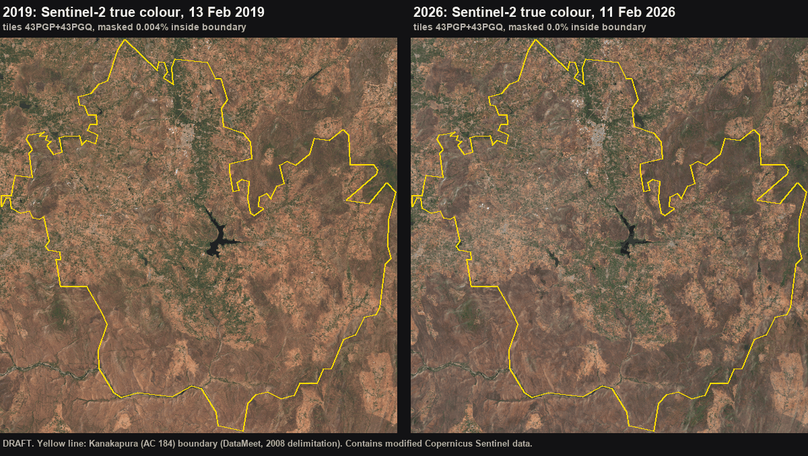
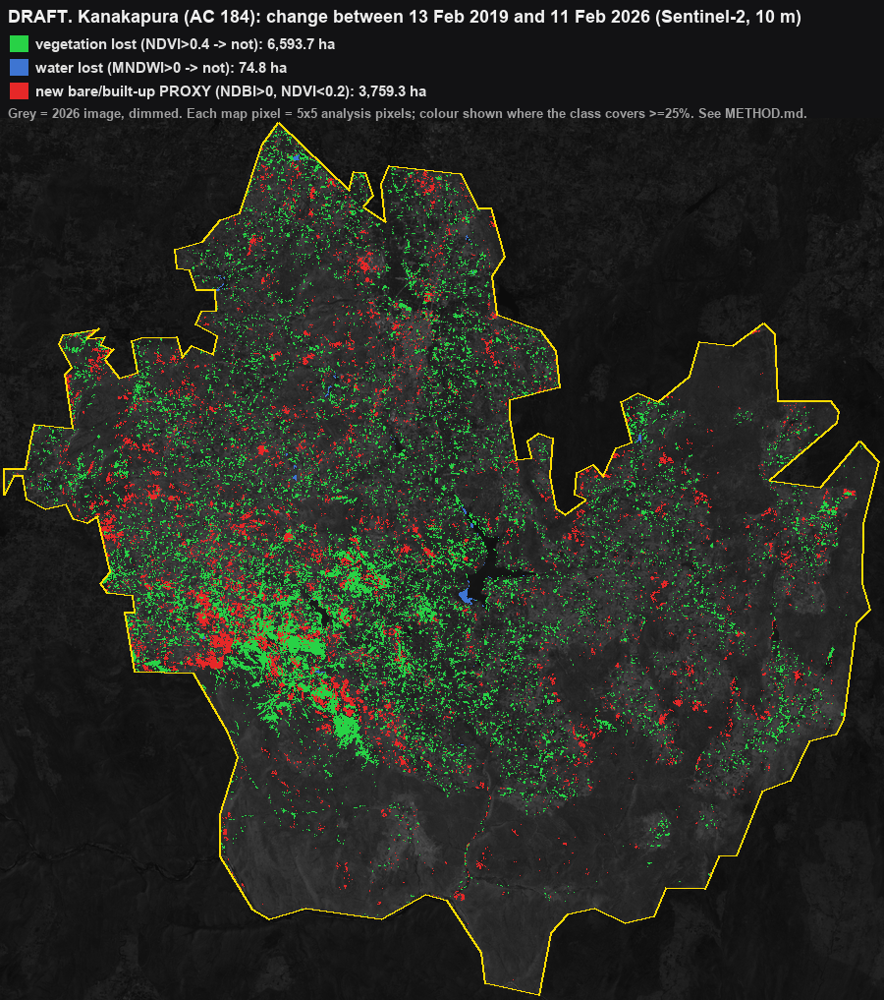
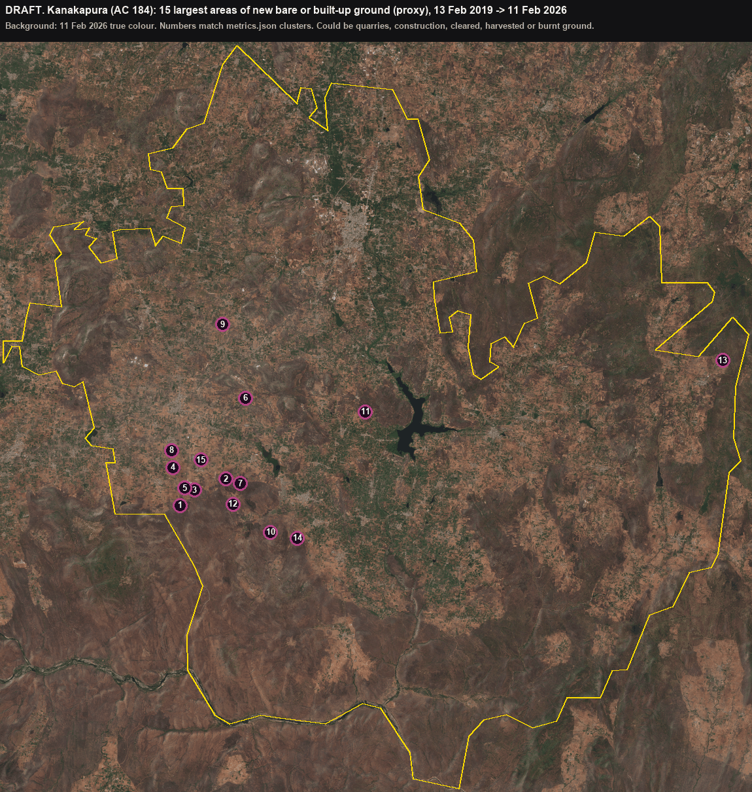

Two cloud-free Sentinel-2 satellite pictures of Assembly constituency 184 (Ramanagara, now Bengaluru South district) are compared pixel by pixel at 10 m. They were taken two days apart in the calendar, seven years apart: 13 February 2019 and 11 February 2026. This is the second constituency in a planned series. It measures land cover only and says nothing about who caused any change.
Kanakapura is mostly farmland, scrub and dry deciduous forest, and in January to March it dries out fast. On the 30 clean dates checked, green cover fell from about 48% of the area in early January 2019 to about 16% by late March. Around 11 to 13 February it stood at 22% in 2019, 52% in 2025 and 29% in 2026. So 2026 was greener than 2019 on every pair of dates checked, but the size of the gap depends on which day is picked and on the rain before it. Do not quote the tiles below as forest gained or land restored.
Share of the constituency with NDVI above 0.4, computed at 20 m on every Sentinel-2 date with less than 1% cloud inside the boundary. Large dots are the two dates used for the tiles and maps. The fall within each year is the dry season. The gap between years is mostly how wet the previous monsoon was.


| Area | Hectares | Green 2019 | Green 2026 | Green lost (ha) | Green gained (ha) | New bare (ha) |
|---|---|---|---|---|---|---|
| Inside protected areas and forests (OSM) | 32,122 | 9.7% | 24.1% | 906 | 5,537 | 463 |
| Everywhere else | 76,747 | 28.0% | 31.9% | 5,688 | 8,676 | 3,297 |
OpenStreetMap outlines inside the boundary: Cauvery WLS (21,409 ha), Chilandi State Forest (12,345 ha), Bannerghatta National Park (6,888 ha), Bananthamari Reserved Forest (1,832 ha), Cauvery North WLS (252 ha), Gangadharagudda Reserved Forest (201 ha), Tenginakal Reserved Forest (176 ha). Inside the forests the green share went from 9.7% to 24.1%. That fits dry deciduous trees being in leaf on one date and bare on the other, and should not be read as new forest.
| Water body (OpenStreetMap) | Location | Water 2019 | Water 2026 | Change | Green on it 2019 | Green on it 2026 |
|---|---|---|---|---|---|---|
| Honaganahalli Kere ಹೊನ್ನಿಗನಹಳ್ಳಿ ಕೆರೆ edge | 12.4356, 77.2739 | 0.0 | 27.9 | +27.9 | 24.1 | 7.2 |
| Unnamed (way/127303374) | 12.3972, 77.6106 | 3.9 | 18.0 | +14.1 | 6.8 | 0.5 |
| Unnamed (way/56139378) | 12.4214, 77.3717 | 44.7 | 50.9 | +6.2 | 68.7 | 44.5 |
| Unnamed (way/1159138439) | 12.5056, 77.4451 | 1.4 | 6.9 | +5.5 | 0.3 | 0.2 |
| Unnamed (way/1159138442) | 12.4993, 77.5226 | 6.4 | 2.0 | −4.4 | 3.3 | 7.1 |
| Unnamed (way/971759790) edge | 12.5717, 77.3295 | 14.8 | 10.6 | −4.2 | 0.4 | 2.9 |
| Unnamed (way/409592628) | 12.4105, 77.5851 | 17.5 | 20.4 | +2.9 | 0.8 | 0.2 |
| Unnamed (way/392169037) | 12.3929, 77.3722 | 7.1 | 4.3 | −2.8 | 3.0 | 1.8 |
| Unnamed (way/376415068) | 12.5212, 77.3778 | 6.8 | 4.0 | −2.8 | 0.1 | 0.6 |
| Unnamed (relation/2018006) | 12.4396, 77.5464 | 11.8 | 13.8 | +2.0 | 2.9 | 1.7 |
59 water polygons in OpenStreetMap touch the boundary and 4 have names; those of at least 2 ha are measured. "Green on it" is usually weeds or crops on a dry bed. Tanks fill and empty with each monsoon, so one February picture says little about a tank's long-term state. "Edge" marks a polygon that crosses the boundary; only the part inside is counted.

| # | Hectares | Location (opens map) | Green in 2019 | In OSM forest | Burn index (dNBR) |
|---|---|---|---|---|---|
| 1 | 40.2 | 12.3973, 77.3217 | 1% | 0% | 0.22 |
| 2 | 34.5 | 12.4115, 77.3467 | 35% | 18% | 0.29 |
| 3 | 26.3 | 12.4055, 77.3294 | 3% | 0% | 0.12 |
| 4 | 17.5 | 12.4178, 77.3179 | 4% | 0% | 0.12 |
| 5 | 17.1 | 12.4067, 77.3242 | 0% | 0% | 0.19 |
| 6 | 15.7 | 12.4550, 77.3580 | 21% | 0% | 0.12 |
| 7 | 13.7 | 12.4088, 77.3547 | 17% | 16% | 0.34 |
| 8 | 11.5 | 12.4267, 77.3170 | 4% | 0% | 0.05 |
| 9 | 10.8 | 12.4949, 77.3457 | 1% | 0% | 0.07 |
| 10 | 10.5 | 12.3823, 77.3711 | 23% | 100% | 0.27 |
| 11 | 10.3 | 12.4469, 77.4237 | 2% | 0% | 0.21 |
| 12 | 9.9 | 12.3978, 77.3507 | 2% | 100% | 0.10 |
| 13 | 9.8 | 12.4728, 77.6206 | 18% | 0% | 0.05 |
| 14 | 9.5 | 12.3791, 77.3858 | 0% | 0% | 0.22 |
| 15 | 8.4 | 12.4217, 77.3334 | 0% | 0% | 0.04 |
Each patch went from not bare in 2019 to bare or built-up on the 2026 date. It could be a quarry, construction, a ploughed or harvested field, dry grass, burnt scrub or a drained tank. This analysis cannot tell which and says nothing about cause, ownership or legality. A dNBR above about 0.1 is often seen on burnt ground but also on harvest and clearing. In all, 305 patches are 1 ha or larger and 34 are 5 ha or larger. A blank field-check sheet for these locations is in field_checks.csv in the repo: a photo and one line on what is there turns a proxy into a fact.
Data: Copernicus Sentinel-2 L2A via Microsoft Planetary Computer (Sentinel-2A scene of 13 Feb 2019 and Sentinel-2B scene of 11 Feb 2026, tile 43PGP); boundary from DataMeet (CC BY 2.5 India); water, forest and protected-area outlines from OpenStreetMap (ODbL). Method, scripts and every number are in research/satellite/kanakapura/ in the repo (METHOD.md, metrics.json). DRAFT, 16 Nov 2026.